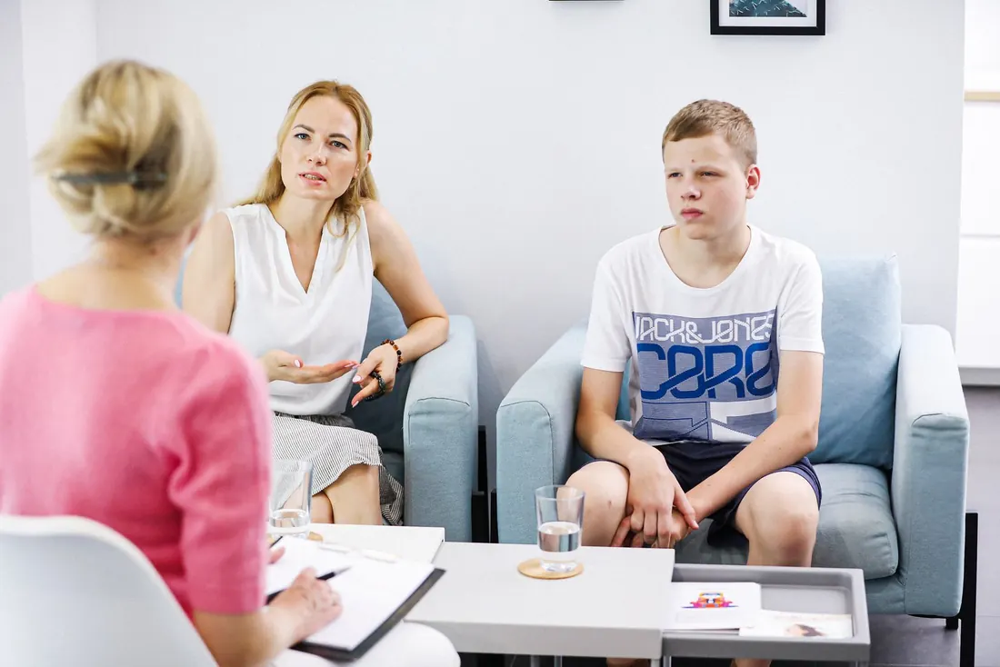

Du willst Menschen wirklich helfen – doch du stößt immer wieder an deine Grenzen?
Lerne, Menschen schnell, tief und nachhaltig in die Veränderung zu begleiten – auch wenn andere Methoden bisher versagt haben.

Vielleicht erkennst du dich wieder:
Psycho-emotionale lösungsorientierte Kurzzeitbegleitung.
Du lernst, Menschen mit emotionalen Blockaden und psychosomatischen Beschwerden professionell zu begleiten – mit Kurzzeitinterventionen, die nachhaltige Ergebnisse bringen.
Der Ansatz verbindet wissenschaftlich fundierte Methoden aus Psychologie, Neurobiologie und Psychosomatik mit körper- und lösungsorientierter Arbeit.
Praxisnah, fundiert und sofort anwendbar.
Praxisnah
Konkrete Techniken statt Theorie – direkt in deiner Arbeit anwendbar, mit Praxisbeispielen und Fallstudien.
Schnelle emotionale Lösungen
Tief sitzende Blockaden auflösen und Klienten in wenigen Sitzungen zu nachhaltiger Veränderung begleiten.
Sicher im Umgang mit Psychosomatik
Zusammenhänge zwischen Körper und Psyche erkennen und körperliche Symptome gezielt angehen.
Zertifikat & Netzwerk
Abschlusszertifikat der Akademie, exklusive Community und Möglichkeiten zur Supervision.
Was Teilnehmerinnen erzählen.
Für Fachpersonen mit psychologischem Vorwissen.
Psychologische Basiskenntnisse sind Voraussetzung. Unsicher, ob deine Qualifikation ausreicht? Schreib uns an.
Vier Module in vier Monaten.
Modul 1: Grundlagen psycho-emotionaler Prozesse
Wie Emotionen, Körper und Psyche zusammenhängen – und wie Blockaden entstehen und sich lösen.
Modul 2: Kurzzeitmethoden & Visualisierungstechniken
Wirksame Techniken für schnelle Veränderungen und tiefgreifende emotionale Prozesse.
Modul 3: Psychosomatik & emotionale Ursachen
Körperliche Symptome mit emotionalen Zuständen verbinden und psychosomatische Beschwerden auflösen.
Modul 4: Aufbau & Begleitung von Kurzzeitprozessen
Strukturierte Begleitung für nachhaltige Ergebnisse in wenigen Sitzungen – ab dem entscheidenden ersten Kontakt.
Nächster Kursstart & Preis auf Anfrage
Schreib mir kurz – ich schicke dir den nächsten Starttermin, den Preis und die Zahlungsmöglichkeiten. Das klären wir ganz individuell.
Ca. 3–5 Stunden pro Woche – gut neben dem Beruf machbar.
Antworten rund um den Zertifikatskurs.
Ist psychologisches Vorwissen nötig?
Ja, grundlegende psychologische Kenntnisse sind Voraussetzung. Der Kurs baut darauf auf und ist für Fachpersonen konzipiert.
Kann ich den Kurs neben dem Beruf machen?
Ja, er ist extra für Berufstätige konzipiert. Rechne mit etwa 3–5 Stunden pro Woche für Live-Sessions, Übungen und Selbststudium. Die Methoden kannst du direkt in deine bestehende Praxis integrieren.
Gibt es ein Zertifikat oder eine Prüfung?
Nach erfolgreichem Abschluss erhältst du ein Zertifikat, das deine neuen Kompetenzen dokumentiert. Prüfungen, Tests oder Lernkontrollen gibt es nicht.
Der Kurs ist keine staatlich anerkannte Ausbildung, sondern dient der persönlichen Weiterbildung und Wissensvermittlung.
Fragen zum Kurs oder zur Anmeldung?
Schreib uns per WhatsApp oder E-Mail.
Neue Kurstermine und Fachbeiträge: Instagram @viktorialangjahr